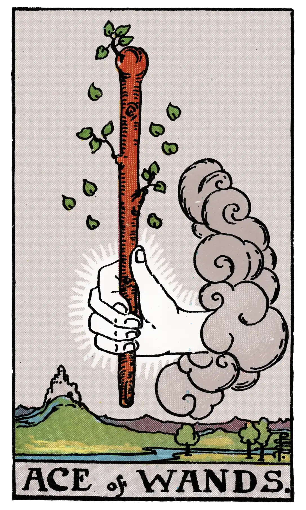

Ace of Wands

A.E.W.
Upright
Creation, invention, enterprise, the powers which result in these; principle, beginning, source; birth, family, origin, and in a sense the virility which is behind them; the starting point of enterprises; according to another account, money, fortune, inheritance.
Additionally
Calamities of all kinds.
Recurrence:
2 - Trickery.
3 - Small success.
4 - Favourable chance.
Reversed
Fall, decadence, ruin, perdition, to perish; also a certain clouded joy.
Additionally
A sign of birth.
Recurrence
2 - Enemies.
3 - Debauchery.
4 - Dishonour.
S.L.M.M.
Upright
Birth, Commencement, Beginning, Origin, Source
Reversed
Persecution, Pursuits Voilence, Vexation, Cruelty, Tyranny.
Description
A hand issuing from a cloud grasps a stout wand or club. Divinatory Meanings: Creation, invention, enterprise, the powers which result in these; principle, beginning, source; birth, family, origin, and in a sense the virility which is behind them; the starting point of enterprises; according to another account, money, fortune, inheritance. Reversed: Fall, decadence, ruin, perdition, to perish also a certain clouded joy.